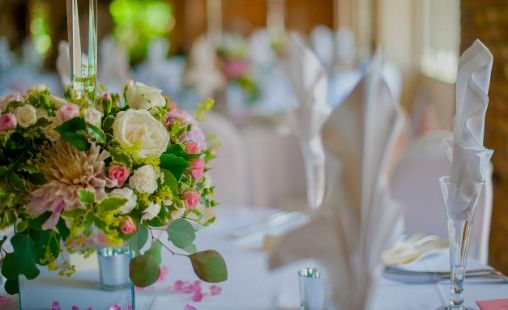
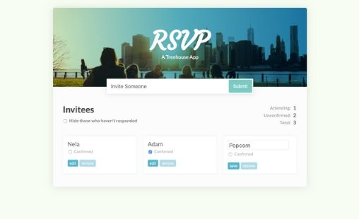
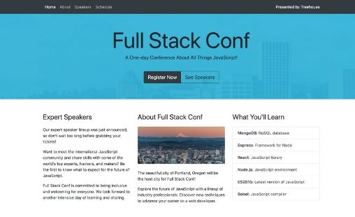
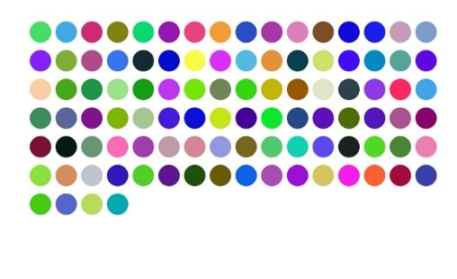
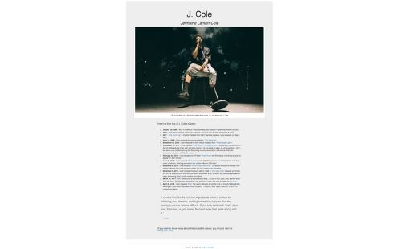

Adam Csordas
Junior Front-End Developer
I'm a self-taught Junior Front-End Developer based in London, UK.
I love coding! Building and
creating something cool always give me a sense of achievement
and fulfilment. I enjoy solving problems too, it's always beauty in the struggle. When I'm not coding, I'm
spending time with my wife.
Also, I like making and editing videos, watching football, playing video games and listening to music.

This is the project, that I'm the most proud of. I have built the website from scratch for my wedding. The
techs, I have used were HTML, CSS and JavaScript. Also,
for the back end, I have got helped out with PHP for the RSVP page. The website has a story about us,
information for the guests and an RSVP page that also
includes a dietary requests page. I have really enjoyed working on this project, it felt like a real
production.

In this project, I have used React to build an app for keeping track of RSVP's. I learned how to break
(refactoring) the app into components and how
they should connect to each other. The app can keep track of the guest list, guests names, confirmed guests
and the pending guests.
The app also has a counter that keeps track of the attending, unconfirmed and total number of guests.

In this project, I have learned about Bootstrap documentation, how Bootstrap solves common layout,
components and options for laying out a project,
including containers, the grid system and responsive utility classes. Custom styles for UI tasks like
navbars, buttons, dropdown menus. Custom components
for creating stylish forms that look consistent across all modern browsers and devices.
In this project, I have learned the core concepts of CSS while styling the structure of a simple website.
Targeting HTML elements with basic selectors,
understanding values and units, box model and basic layout. Enhancing the design with CSS such as rounded
corners, box shadows and gradients. Also, to make
sure the page looks good on all devices, with media queries.

This little program prints out 100 random colours to the browser. The task was to improve the already
existing script. I have practised refactoring the code
and learned how to apply DRY programming principles to simplify this program using a loop.

In this little project, the goal was to practice and learn how to use Bootstrap by building a tribute page.
The idea was to create a Wikipedia page of a chosen famous person. The page
had to include titles, image, text and links. The page also had to be nicely formatted.